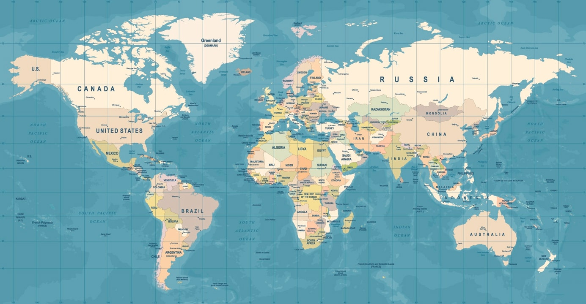
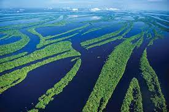
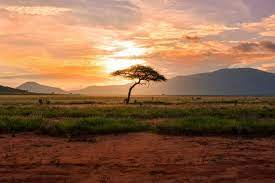

Места обитания опасных тварей

1. Австралия
В принципе, Австралия - опаснейшая страна мира. Как это не странно, но это правда. В этой сказочной
стране Вас может подстерегать очень много природных опасностей, о которых необходимо постоянно
помнить, особенно, новоприезжим из Европы или других стран света. К сожалению, люди, приезжающие
сюда, часто "расслабляются" и теряют бдительность. Тяжело поверить, что здесь можно попасть в
беду или даже погибнуть.
Одной из основных причин все большей популярности Австралии среди иностранных туристов является неповторимость ее фауны и флоры. К эндемическим (то есть присущим только Австралии) видам принадлежат 82% австралийских млекопитающих, 90% лягушек и рептилий (кстати, самых ядовитых в мире) и 45% птиц.
Однако, даже такие дружелюбные австралийские животные как кенгуру (kangaroo) иногда могут хорошо поколотить человека своими задними лапами. Здесь не рекомендуют детям гладить больших кенгуру или их детенышей в присутствии взрослого самца. Находящаяся при Вас собака должна быть на поводке. Кенгуру не любят собак и могут напасть даже на Вас самих, если Вы будете защищать собаку. Австралийский украинский писатель Дмытро Чуб описал в одном из своих рассказов, как кенгуру пытался утопить собаку в реке. О "Кенгурином процессе" рассказывается в главе "Да здравствует австралийский закон!".
В то же время беспечные кенгуру и прочие австралийские зверюшки (вомбаты, ехидны, опоссумы и тому подобное) могут внезапно выскочить на дорогу (чаще всего ночью) перед Вашим автомобилем и попасть под его колеса, несмотря на колючую проволоку, часто ограждающую дороги в Австралии. Особенно много убитых животных я видел на обочинах дорог в Тасмании, где машины ездят сравнительно редко, и животные их не боятся. Такая "встреча" с животными может быть опасной и для людей. Мне довелось оказывать медицинскую помощь молодому 18-летнему парню, машина которого перевернулась из-за того, что он пытался объехать выбежавшего на дорогу кролика. Неприятно об этом писать, но за городской чертой, где максимальная скорость автомобилей составляет 100 или даже 110 км в час, при внезапном появлении небольших животных на Вашем пути, ради Вашей безопасности и Ваших пассажиров лучше вообще не сворачивать с дороги или резко не тормозить.
Большая часть экзотических австралийских животных не боится людей и иногда дают себя погладить, однако все они, вомбат (wombat - Vombatus ursinus) в частности, могут Вас покусать или поцарапать. Даже такое дружелюбное существо как австралийский медвежонок коала (koala - Phascolarctus cinereus) может вцепиться в Вас своими когтями так же, как он это делает, взбираясь на деревья.
Самец миролюбивого австралийского утконоса (platypus - Ornithorhynchus anatinus) также оказался единственным ядовитым млекопитающим. Утконос вооружен ядовитым шипом, который он прячет на внутренней поверхности своих задних лап. При уколе этот шип может вызвать невыносимую боль и местный отек. На пораженную конечность следует наложить шину на несколько дней...
Одной из основных причин все большей популярности Австралии среди иностранных туристов является неповторимость ее фауны и флоры. К эндемическим (то есть присущим только Австралии) видам принадлежат 82% австралийских млекопитающих, 90% лягушек и рептилий (кстати, самых ядовитых в мире) и 45% птиц.
Однако, даже такие дружелюбные австралийские животные как кенгуру (kangaroo) иногда могут хорошо поколотить человека своими задними лапами. Здесь не рекомендуют детям гладить больших кенгуру или их детенышей в присутствии взрослого самца. Находящаяся при Вас собака должна быть на поводке. Кенгуру не любят собак и могут напасть даже на Вас самих, если Вы будете защищать собаку. Австралийский украинский писатель Дмытро Чуб описал в одном из своих рассказов, как кенгуру пытался утопить собаку в реке. О "Кенгурином процессе" рассказывается в главе "Да здравствует австралийский закон!".
В то же время беспечные кенгуру и прочие австралийские зверюшки (вомбаты, ехидны, опоссумы и тому подобное) могут внезапно выскочить на дорогу (чаще всего ночью) перед Вашим автомобилем и попасть под его колеса, несмотря на колючую проволоку, часто ограждающую дороги в Австралии. Особенно много убитых животных я видел на обочинах дорог в Тасмании, где машины ездят сравнительно редко, и животные их не боятся. Такая "встреча" с животными может быть опасной и для людей. Мне довелось оказывать медицинскую помощь молодому 18-летнему парню, машина которого перевернулась из-за того, что он пытался объехать выбежавшего на дорогу кролика. Неприятно об этом писать, но за городской чертой, где максимальная скорость автомобилей составляет 100 или даже 110 км в час, при внезапном появлении небольших животных на Вашем пути, ради Вашей безопасности и Ваших пассажиров лучше вообще не сворачивать с дороги или резко не тормозить.
Большая часть экзотических австралийских животных не боится людей и иногда дают себя погладить, однако все они, вомбат (wombat - Vombatus ursinus) в частности, могут Вас покусать или поцарапать. Даже такое дружелюбное существо как австралийский медвежонок коала (koala - Phascolarctus cinereus) может вцепиться в Вас своими когтями так же, как он это делает, взбираясь на деревья.
Самец миролюбивого австралийского утконоса (platypus - Ornithorhynchus anatinus) также оказался единственным ядовитым млекопитающим. Утконос вооружен ядовитым шипом, который он прячет на внутренней поверхности своих задних лап. При уколе этот шип может вызвать невыносимую боль и местный отек. На пораженную конечность следует наложить шину на несколько дней...

2. Амазонка
Одна из самых зеленых областей на всей планете, считающаяся «легкими» Земли, - это Амазонка.
Это естественное пространство, состоящее из джунглей и очень густых лесов, где обитают миллионы
видов, многие из которых до сих пор неизвестны. Биоразнообразие - это индикатор качества экосистемы
и ее способности поддерживать жизнь. Следовательно фауна амазонки он стал объектом изучения
многочисленных исследований по всему миру.
Есть много видов, которые до сих пор неизвестны, поскольку они представляют собой очень плотные экосистемы и полны жизни. При существующих температурно-влажностных условиях встречаются крупные виды растений. Преобладающий тропический климат характеризуется большое количество осадков в течение года и высокая степень влажности. Эти атмосферные переменные создают необходимые условия окружающей среды, способствующие развитию жизни.
Мы видим, что и флора, и фауна Амазонки - один из крупнейших источников жизни на всей планете. А в лесах Амазонки обитает около 2.5 миллионов видов насекомых, десятки тысяч видов растений и около 2.000 XNUMX птиц и млекопитающих. На сегодняшний день они обнаружены не менее 2.200 видов рыб, 1.300 птиц, 427 млекопитающих, 428 амфибий и 378 рептилий. Ученые открывают и классифицируют эти виды животных в зависимости от их характеристик и среды обитания.
Известно, что каждый пятый вид рыб обитает в реках и ручьях Амазонки. Также известно, что в такой же пропорции встречаются виды птиц со всего мира, обитающие в тропических лесах Амазонки. Практически на всей планете можно встретить животных, которые живут в этих местах. Такова вероятность, что в тропических лесах Амазонки обитает один из десяти известных в мире видов животных. Эти данные свидетельствуют о том, что в Амазонии находится самая большая коллекция видов животных и растений в мире.
Человек оказывает многочисленные воздействия на природную экосистему, поскольку ему необходимо добывать ее ресурсы. Проблема возникает, когда добыча ресурсов превышает скорость их восстановления. Другими словами, это чрезмерная эксплуатация природных ресурсов. Наблюдают за фауной Амазонки серьезно пострадал в течение десятилетий в результате деятельности человека. И дело в том, что для добычи природных ресурсов экосистема изменяется до такой степени, что она деградирует. Деградированная экосистема в конечном итоге фрагментирует и ухудшает качество окружающей среды, так что у организмов нет среды обитания, в которой они могли бы развиваться.
Одним из основных воздействий на окружающую среду в этой области является вырубка лесов. Недавние лесные пожары также оказали большое влияние на фауну Амазонки, что привело к сокращению многих видов. Фауна этого района находится в серьезной опасности, и многие животные находятся под угрозой исчезновения. Эти леса и тропические джунгли было трудно исследовать, учитывая их плотность на протяжении всей истории. Однако с применением техники проникнуть в джунгли намного проще.
Есть много видов, которые до сих пор неизвестны, поскольку они представляют собой очень плотные экосистемы и полны жизни. При существующих температурно-влажностных условиях встречаются крупные виды растений. Преобладающий тропический климат характеризуется большое количество осадков в течение года и высокая степень влажности. Эти атмосферные переменные создают необходимые условия окружающей среды, способствующие развитию жизни.
Мы видим, что и флора, и фауна Амазонки - один из крупнейших источников жизни на всей планете. А в лесах Амазонки обитает около 2.5 миллионов видов насекомых, десятки тысяч видов растений и около 2.000 XNUMX птиц и млекопитающих. На сегодняшний день они обнаружены не менее 2.200 видов рыб, 1.300 птиц, 427 млекопитающих, 428 амфибий и 378 рептилий. Ученые открывают и классифицируют эти виды животных в зависимости от их характеристик и среды обитания.
Известно, что каждый пятый вид рыб обитает в реках и ручьях Амазонки. Также известно, что в такой же пропорции встречаются виды птиц со всего мира, обитающие в тропических лесах Амазонки. Практически на всей планете можно встретить животных, которые живут в этих местах. Такова вероятность, что в тропических лесах Амазонки обитает один из десяти известных в мире видов животных. Эти данные свидетельствуют о том, что в Амазонии находится самая большая коллекция видов животных и растений в мире.
Человек оказывает многочисленные воздействия на природную экосистему, поскольку ему необходимо добывать ее ресурсы. Проблема возникает, когда добыча ресурсов превышает скорость их восстановления. Другими словами, это чрезмерная эксплуатация природных ресурсов. Наблюдают за фауной Амазонки серьезно пострадал в течение десятилетий в результате деятельности человека. И дело в том, что для добычи природных ресурсов экосистема изменяется до такой степени, что она деградирует. Деградированная экосистема в конечном итоге фрагментирует и ухудшает качество окружающей среды, так что у организмов нет среды обитания, в которой они могли бы развиваться.
Одним из основных воздействий на окружающую среду в этой области является вырубка лесов. Недавние лесные пожары также оказали большое влияние на фауну Амазонки, что привело к сокращению многих видов. Фауна этого района находится в серьезной опасности, и многие животные находятся под угрозой исчезновения. Эти леса и тропические джунгли было трудно исследовать, учитывая их плотность на протяжении всей истории. Однако с применением техники проникнуть в джунгли намного проще.

3. Африка
Почти каждому из нас все в детстве говорили: Африка – это опаснейший континент на Земле. И
многие-многие
этому искренне верили, особенно после того, как видели тамошних зверей – ведь они даже всем своим
видом наводят ужас! Холодок бегает по коже, как говорится. И даже те, что кажутся милыми, могут
запросто одним маленьким укусом или рывком нанести фатальный урон здоровью. Или даже убить. Это
место
огромно по площади своей, и оно так и кишит самыми опасными, самыми хитрыми, смертоносными и
изворотливыми созданиями.
Каждый из них умен, стремителен, так и норовит сделать какую-нибудь пакость, способную навсегда
оставить в вас как физический, так и психический, негативно влияющий на дальнейшую жизнь
отпечаток.

4. Остров Змей
Змеиный остров Кеймада-Гранди — небольшой участок суши на юге бразильского штата Сан-Паулу,
расположенный в теплых водах Атлантического океана. Этот остров вытянутой формы считается одним
из самых неприветливых и опасных мест на планете. Кеймада-Гранди находится во власти ядовитых
змей и обладает статусом самого крупного природного серпентария в мире.
Змеиный остров Кеймада-Гранди имеет площадь 43 га и поднимается на 200 м над уровнем моря. Он покрыт пышной растительностью и необитаем. Здесь нет ни одного отеля и ресторана, и только одинокий белый маяк на берегу напоминает о том, что на острове когда-то жили люди. Бразильцы относятся к Кеймада-Гранди с опаской и называют его «островом смерти». Некоторые не решаются даже подплыть к его берегам, не говоря уже о том, чтобы высадиться на сам остров. На Кеймада-Гранди обитает одна из самых ядовитых змей планеты – островной ботропс или копьеголовая змея, которая относится к семейству гадюковых. Территория змеиного острова Кеймада-Гранди буквально кишит пресмыкающимися, и их популяция доходит до 5000 особей. Примечательно, что копьеголовые змеи обитают только на этом бразильском острове, то есть являются эндемиками. Власти Бразилии наделили этот участок суши статусом природного заповедника и ввели официальный запрет на посещение острова для местных жителей и туристов. Однако, и без этого запрета не находится никого, что отважился бы ради новых впечатлений и опыта рискнуть своей жизнью. Змеиный остров Кеймада-Гранди считается одним из самых необычных заповедников планеты, история которого обросла трагическими легендами и слухами. Из-за реальной угрозы для жизни и здоровья путешественников только подвозят к берегу, но на сам остров не высаживают. Помимо туристических и прогулочных катеров, возле Кеймада-Гранди часто можно встретить рыбаков и дайверов. Раз в год на остров высаживаются бразильские военнослужащие, которые приезжают, чтобы провести работы по обслуживанию маяка.
Остров пытались обжить бразильские бизнесмены, желающие разбить на нем банановые плантации. Нанятые ими рабочие пробовали выжигать лес и кустарник, но змеи кусали людей, и те вынуждены были уезжать на материк. В любом случае, победа на змеином острове Кеймада-Гранди всегда оказывалась за пресмыкающимися. Сегодня только ученые-герпетологи решаются посещать эти негостеприимные места, но и им приходится быть очень осторожными и предпринимать все меры безопасности, чтобы избежать змеиных укусов. Правительство Бразилии требует, чтобы в каждой научной экспедиции обязательно находился врач, который мог бы оказать медицинскую помощь пострадавшему.
Змеиный остров Кеймада-Гранди имеет площадь 43 га и поднимается на 200 м над уровнем моря. Он покрыт пышной растительностью и необитаем. Здесь нет ни одного отеля и ресторана, и только одинокий белый маяк на берегу напоминает о том, что на острове когда-то жили люди. Бразильцы относятся к Кеймада-Гранди с опаской и называют его «островом смерти». Некоторые не решаются даже подплыть к его берегам, не говоря уже о том, чтобы высадиться на сам остров. На Кеймада-Гранди обитает одна из самых ядовитых змей планеты – островной ботропс или копьеголовая змея, которая относится к семейству гадюковых. Территория змеиного острова Кеймада-Гранди буквально кишит пресмыкающимися, и их популяция доходит до 5000 особей. Примечательно, что копьеголовые змеи обитают только на этом бразильском острове, то есть являются эндемиками. Власти Бразилии наделили этот участок суши статусом природного заповедника и ввели официальный запрет на посещение острова для местных жителей и туристов. Однако, и без этого запрета не находится никого, что отважился бы ради новых впечатлений и опыта рискнуть своей жизнью. Змеиный остров Кеймада-Гранди считается одним из самых необычных заповедников планеты, история которого обросла трагическими легендами и слухами. Из-за реальной угрозы для жизни и здоровья путешественников только подвозят к берегу, но на сам остров не высаживают. Помимо туристических и прогулочных катеров, возле Кеймада-Гранди часто можно встретить рыбаков и дайверов. Раз в год на остров высаживаются бразильские военнослужащие, которые приезжают, чтобы провести работы по обслуживанию маяка.
Остров пытались обжить бразильские бизнесмены, желающие разбить на нем банановые плантации. Нанятые ими рабочие пробовали выжигать лес и кустарник, но змеи кусали людей, и те вынуждены были уезжать на материк. В любом случае, победа на змеином острове Кеймада-Гранди всегда оказывалась за пресмыкающимися. Сегодня только ученые-герпетологи решаются посещать эти негостеприимные места, но и им приходится быть очень осторожными и предпринимать все меры безопасности, чтобы избежать змеиных укусов. Правительство Бразилии требует, чтобы в каждой научной экспедиции обязательно находился врач, который мог бы оказать медицинскую помощь пострадавшему.